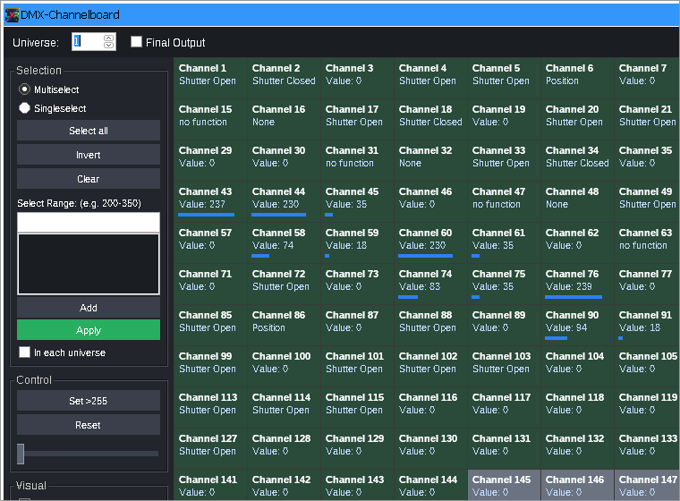

For: FullPlayer
DMX Board on the function bar opens the DMX-Channelboard: the 512 channels of one universe as cells, to see them all at once and to set many channels together. Make the window wider or narrower: the cells follow (16 a row when it opens, then as many as fit). The universe chosen is kept for the next time the board opens, while the program runs.

The board with universe 1 of Andrei_edit. A cell shows the channel and its value with a bar, or the preset the channel is on (Shutter Open, Position ...).
200-350 (or one channel),
Add puts it in the list under it; Apply selects the channels of the
list and of the box (a channel already selected is unselected).Under Control: Set >255 sets the selected channels to 255, Reset to 0, and the fader to its value. The board sets the values only: it does not put the channels on MAN, so a running button that uses them sets them again. To hold channels by hand, use MAN in the General Mixer.